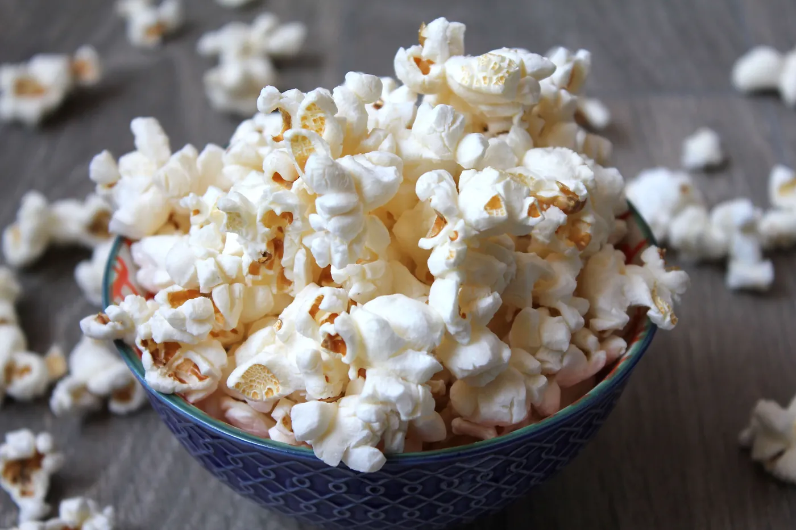

Snacks
Chips
Thin, crunchy homemade potato chips.

Every step is ticked off. Want to cook it again?
Snacks
Thin, crunchy homemade potato chips.

Snacks
No-fuss snack bars made with dates and nuts.

Snacks
Crisp golden French fries from scratch.